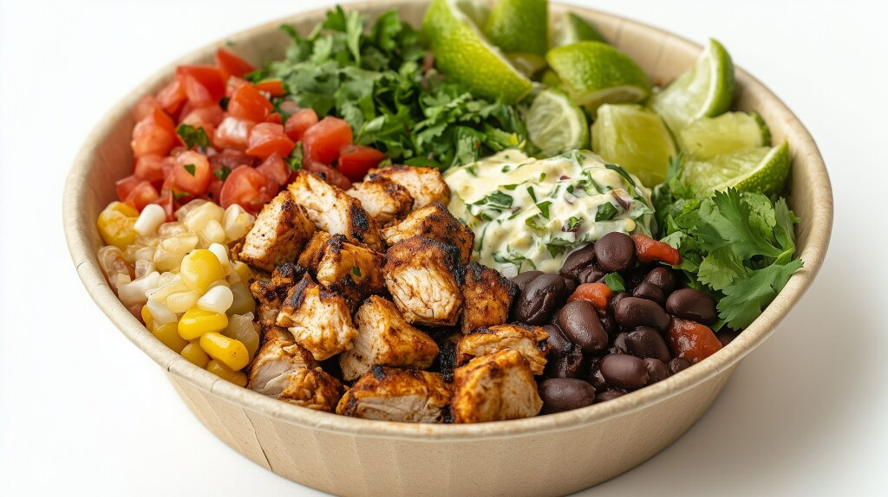

↩ Home
Chicken Burrito Bowls

Description
A flavorful chicken burrito bowl packed with juicy chipotle chicken, cilantro-lime rice, black beans, and fajitas. This dish is perfect for a healthy and satisfying meal.
Ingredients
- 2lbs boneless skinless chicken thighs
- 1 7oz can chipotles in adobo sauce
- 1 Tbsp minced garlic
- 2 tsp cumin
- 3 tsp oregano
- 1 tsp ground pepper
- 2 tsp salt
- 2 cups white rice
- 1 15oz can black beans
- 2 green bell peppers
- 1 red onion
- 1 bunch cilantro
- 8 Tbsp lime juice
Instructions
- In a food processor, add can of chipotles in adobo sauce (only 2-3 chipotle peppers), minced garlic, cumin, 2 tsp oregano, 1 tsp salt, pepper, 4 Tbsp lime juice, and 1/4 cup chopped red onion. Blend until marinade is made.
- Add chicken thighs to marinade in a plastic bag and refrigerate for at least 4 hours.
- Once chicken is marinated, start cooking rice according to package instructions.
- In a skillet on medium high heat, cook chicken until it reaches an internal temperature of 165°F
- Remove chicken from skillet and let rest for a few minutes. Then dice the chicken.
- In a skillet, add sliced green bell pepper and sliced red onion along with 1 tsp of oregano and 1 tsp salt.
- Cook pepper and onion, occasionally tossing, until they are slightly softened.
- Once rice is cooked, add in chopped cilantro and 4 Tbsp lime juice. Mix thoroughly.
- Add can of drained black beans to rice and once again mix thoroughly.
- Distribute chicken, fajitas, and rice mixture evenly into bowls. Add your favorite toppings such as:
- guacamole
- pico de gallo
- corn salsa
- shredded cheese
- shredded lettuce